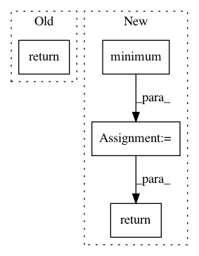

58ace0a10f2859a7bfbb9b56238ba47e4175f5ac,onnx_tf/handlers/backend/min.py,Min,_common,#Any#Any#,17
Before Change
@classmethod
def _common(cls, node, **kwargs):
values = [kwargs["tensor_dict"][inp] for inp in node.inputs]
return [
cls.make_tensor_from_onnx_node(
node, inputs=[tf.stack(values)], **kwargs)
]
@classmethod
def version_1(cls, node, **kwargs):
return cls._common(node, **kwargs)
After Change
values = [tf.cast(v, cls.cast_map[dtype]) for v in values]
result = values[0]
for i in range(1, len(values)):
result = tf.minimum(result, values[i])
return [tf.cast(result, dtype) if dtype in cls.cast_map else result]
@classmethod
def version_1(cls, node, **kwargs):
return cls._common(node, **kwargs)
In pattern: SUPERPATTERN
Frequency: 3
Non-data size: 4
Instances
Project Name: onnx/onnx-tensorflow
Commit Name: 58ace0a10f2859a7bfbb9b56238ba47e4175f5ac
Time: 2020-10-09
Author: wtsang@us.ibm.com
File Name: onnx_tf/handlers/backend/min.py
Class Name: Min
Method Name: _common
Project Name: chainer/chainerrl
Commit Name: 6e1bb36b78a4b9bd9052879e657cb399a2c6ecbd
Time: 2016-08-25
Author: muupan@gmail.com
File Name: q_output.py
Class Name: ContinuousQOutput
Method Name: greedy_actions
Project Name: Qiskit/qiskit-aqua
Commit Name: 8ac52eaf2f03402e413101c94301306f41f60a19
Time: 2019-12-12
Author: jules.gacon@googlemail.com
File Name: qiskit/aqua/algorithms/single_sample/amplitude_estimation/iqae.py
Class Name: IterativeAmplitudeEstimation
Method Name: _chernoff_confint